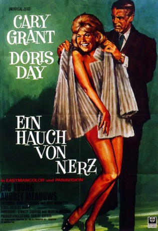

Auszeichnungen: für 3 Oscars nominiert 1 GoldenGlobes gewonnen
 gesehen am 20.11.2017
gesehen am 20.11.2017Alternativ: That Touch of Mink
Auszeichnungen: für 3 Oscars nominiert 1 GoldenGlobes gewonnen gesehen am 20.11.2017
 
 IMDB-Wertung: 6.7 / 10
IMDB-Wertung: 6.7 / 10  Metascore:
Metascore: 
Während eines heftigen Gewitters brettert Wirtschaftsboss Philip Shayne mit seinem Dienstwagen rücksichtslos durch eine Pfütze und besudelt damit den Regenmantel der arbeitslosen Sekretärin Cathy Timberlake. Der frauenjagende Shayne lädt die blonde Dame daraufhin unter dem Vorwand der Entschuldigung aber mit eindeutigen Absichten ein, ihn auf einer Bermuda-Reise zu begleiten. Die prüde Cathy nimmt die Einladung an, denkt aber gar nicht daran, sich vernaschen zu lassen. Sie ziert sich erst einmal, wie es sich für ein sittsames Mädchen gehört und dreht dann den Spieß kurzerhand um ...
Jahr: 1962
Dauer: 99 Minuten
FSK: 16
Land: USA Studio: Universal International ®Tonspuren:
Untertitel: Deutsch,
Auflösung: 1080p (1920x824) Größe: 8960 MB
Regisseur: Delbert Mann
Drehbuch: Stanley Shapiro
Soundtrack:
Darsteller:
 Cary Grant als Philip Shayne
Cary Grant als Philip Shayne Doris Day als Cathy Timberlake
Doris Day als Cathy Timberlake Gig Young als Roger
Gig Young als Roger John Astin als Mr. Everett Beasley
John Astin als Mr. Everett Beasley John Fiedler als Mr. Smith
John Fiedler als Mr. Smith Dorothy Abbott als Stewardess , uncredited
Dorothy Abbott als Stewardess , uncredited Steve Carruthers als Gallery Spectator , uncredited
Steve Carruthers als Gallery Spectator , uncredited Richard Deacon als Mr. Miller , uncredited
Richard Deacon als Mr. Miller , uncredited John Roy als Restaurant Patron , uncredited
John Roy als Restaurant Patron , uncredited Bert Stevens als United Kingdom Representative , uncredited
Bert Stevens als United Kingdom Representative , uncredited Alex Ball als Hotel Clerk , uncredited
Alex Ball als Hotel Clerk , uncredited Jan Burrell als Miss Jones, Roger's Secretary , uncredited
Jan Burrell als Miss Jones, Roger's Secretary , uncreditedDatei: X:\1962\Hauch von Nerz, Ein (1962, FSK16, 1920x824).mkv seit 02.10.2017
Festplatte: HD 1900-1970
 Es gibt insgesamt 23 Filme in der Gruppe '1962'
Es gibt insgesamt 23 Filme in der Gruppe '1962'